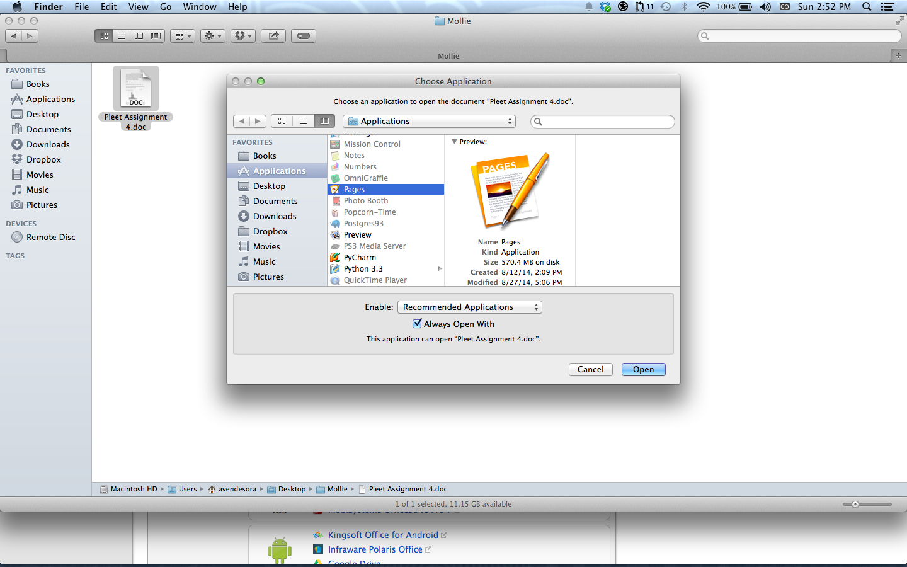
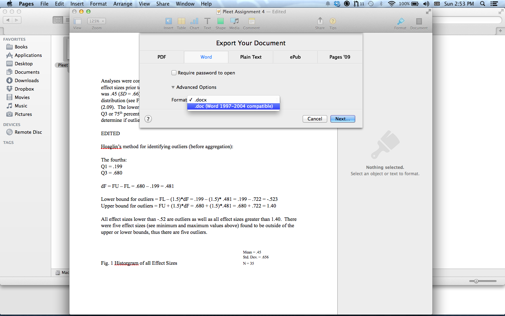
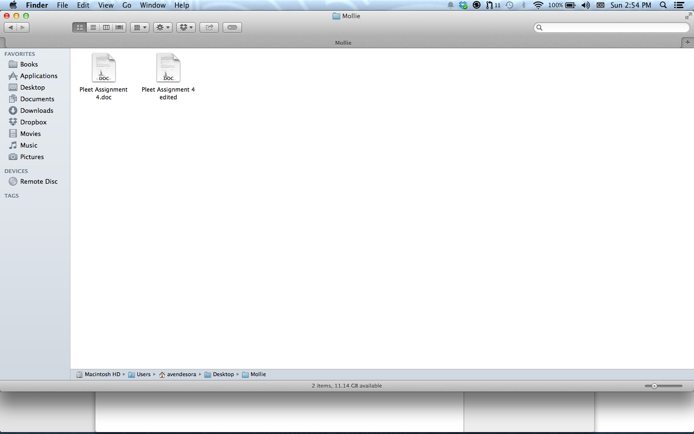
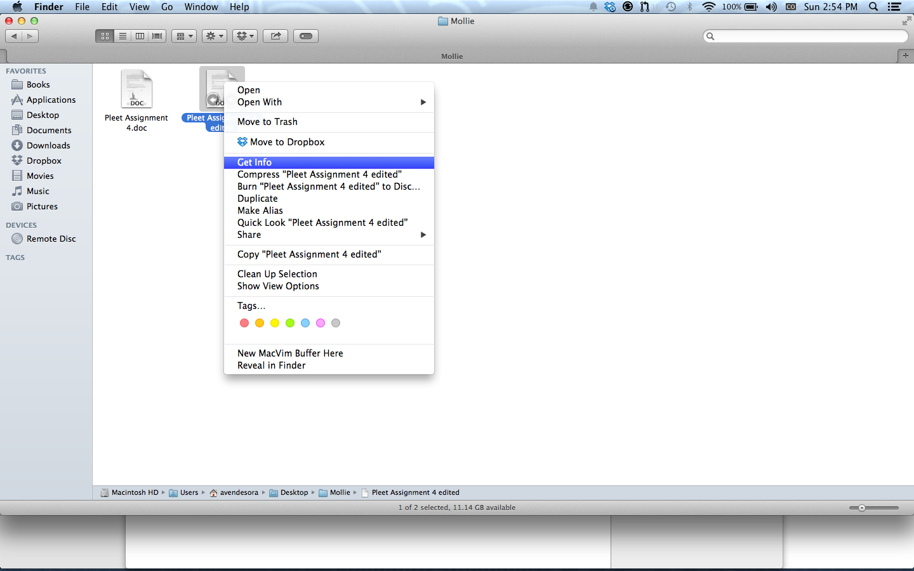
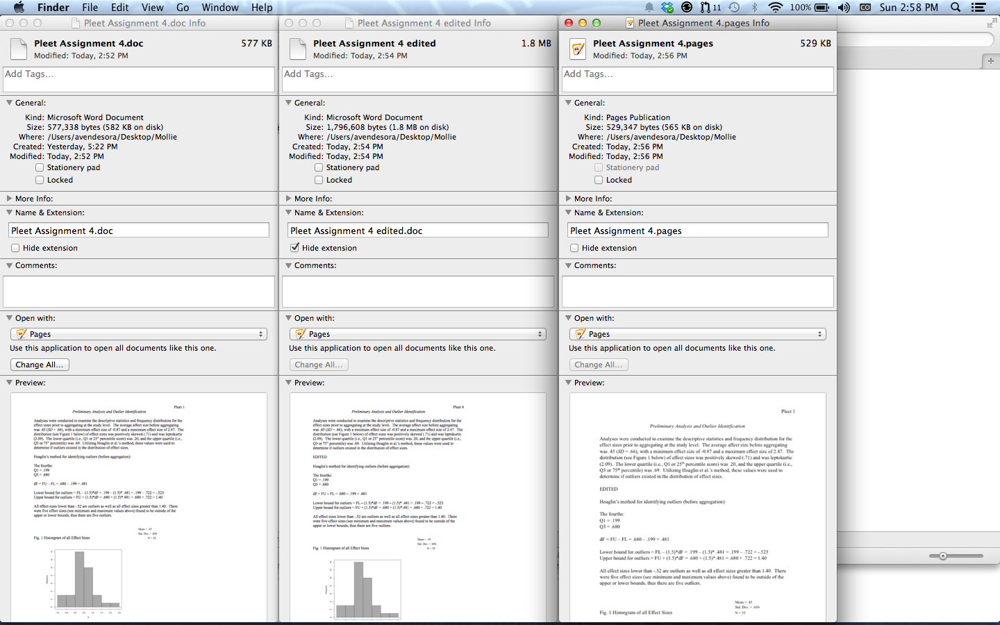
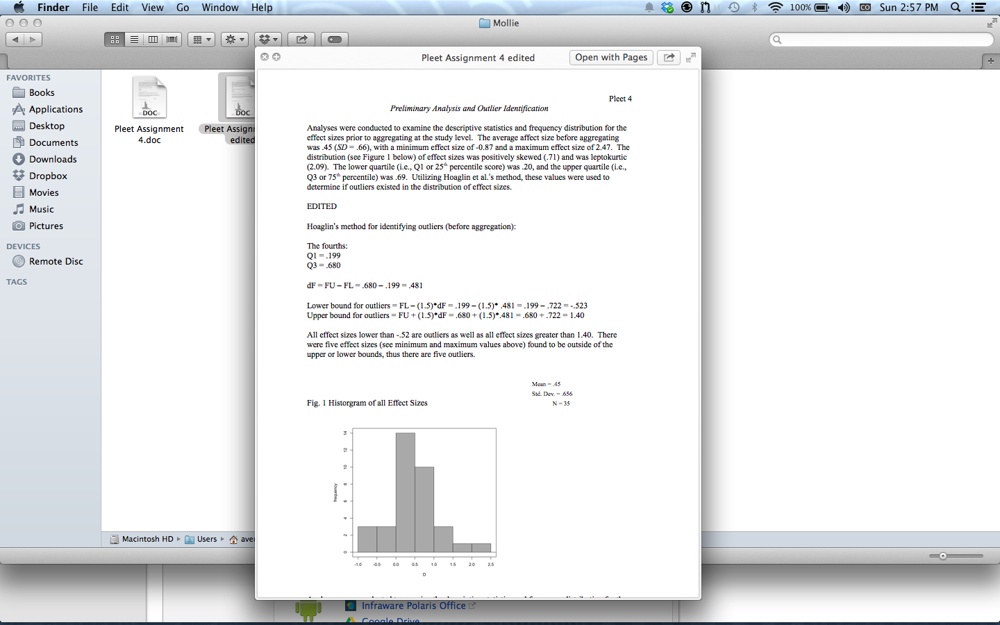

by Hassan
Posted on August 31, 2014 at 5:00 PM
So, as described on this site about .doc files, you have a few options when dealing with your Word Documents on your new mac:
Go to the App Store and search and install 'Pages', if you don't already have it installed. It should come for free with your new Macbook. Check the Updated panel to see if it's already there. There may be some general software updates for you to install anyway. I'd recommend doing so.
Right click on the file and select Open With > Pages 
If Pages doesn't appear, select Other and scroll down the Applications list until you see Pages. Select it.
Welcome to your new text editor
This is your new Word. If it doesn't have the features you need go ahead and switch to a differend document processor. It should though, just google for it. If you try to save, it will ask you for the name and location to save the file. This is because it has a new format, .pages . I'd just use this format while you're working on a document. When you're done, we'll export it back to .doc so your other computers can use it.
.doc is the format it came in.
Here we have the original, and the edited and exported version. (note: original has the file extension)
We can inspect the file by right clicking and selecting Get Info
Here we are inspecting 3 files. Original, Edited and Exported, Edited and saved as '.pages'
This is useful for inspecting the extension (.doc, .pages, .pdf, etc) as well as what we're using to open it. 
Fun Fact: you can preview a file by just tapping spacebar while it's highlighted in the finder.
You should be able to copy the exported files to your flash drive and use them on your old computer, as well as other computers (assuming they are also using an older version of word). For just transfering files to print, .pdf might be a safer bet.